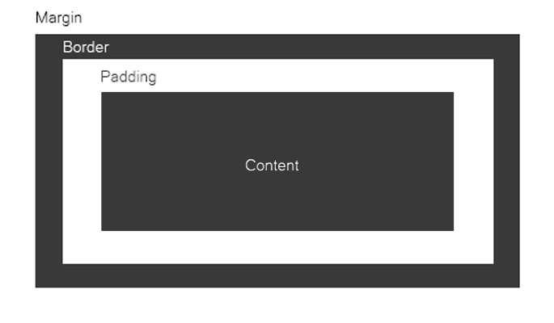

Objective: Alright, so now we can style a webpage with some basic CSS tags but lets get more in depth. Have you ever heard of the box model? In this lesson we will explore the box model and it's characterstics.

So it's simple your content is in the middle, around it an invisable layer of padding, you can put a border around all the content, then around that is a invisible layer of margin. You can use this to adjust the positions of your layouts as well as add interesting style to your content.
Width and height properties adjust the content. Their are multiple settings to keep in mind when using width and height in css.
auto; set width or height to auto and the browser will calculate their algorhythm automatically.
inherit; the value is passed from the parent element of the content. (*this property is not supported by Internet Explorer)
To add padding to the whole area around content the only thing you have to do is add the code:
div_id{
padding:10px;
}
To add padding just to one side of the content your code would look like this:
div_id{
padding-top:10px;
}
div_id{
padding-right:9px;
}
div_id{
padding-bottom:8px;
}
div_id{
padding-left:7px;
}
or you can group it all in one just by knowing it sets properties clockwise starting from the top:
div_id{
padding:10px 9px 8px 7px
}
Also, you can shorthand padding because it groups together unwritten proporties:
div_id{
padding:10px 5px;
}
(the top and bottom will now of a 10px padding and the right and left a 5px) or
div_id{
padding:10px 2px 5px;
}
(the top will have a padding of 10px, the right and left 2px, and then the bottom 5px)
Border has multiple properties you can set because it isn't just the invisable edge creating the layout of a web space. It's a literal border and it is highly customizable.
Different border properties:
border-width: creates border width making the border more or less bold.
border-style: creates the style of a border their are multiple styles they are solid, dashed, dotted, double, groove, ridge, inset, and outset.
Note: The border works like the padding property in a few specific ways, let's take a peek.
div_id{
border-top: 15px;
border-right: 5px;
border-bottom: 5px;
border-left: 5px;
}
(in that example there is a much heavier border on the top) also,
you can set the styles of each side seperately
div_id{
border-top-style:inset;
border-right-style:dashed;
border-bottom-style:solid;
border-left-style:dotted;
}
(each side is set to have a different border style) also,
you can do shorthand in border
div_id{
border:5px dashed red;
}
(our example border is 5pxs bold, it is dashed, and it is red. Border shorthand must be done in that order)
Margin is easy. It works just like padding does except it's the area around the padding and border. Therefor, it is coded just the same. You only have to replace padding with margin and walha.
What's the layer of the box model first around the content?
How would you assign an automatic default pick for a form input property?
What inline tag would bold text?